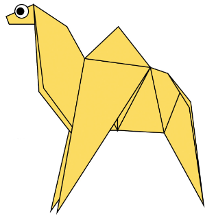
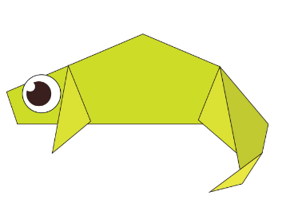
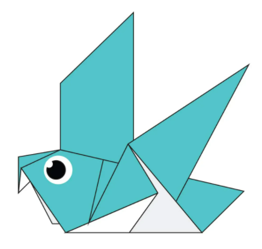
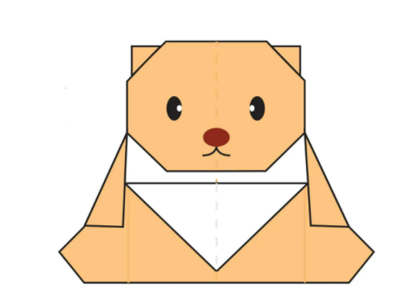

Camel
- Camel's ears are funny.
- Camel's can move easily in sand because of their speacial designed feets.
- When they find water, they will drink as much as possible.

Camel
- Chameleon are reptiles that are part of iguana suborder.
- Changing skin colour is an important part of communicationamoung chameleons.
- Most chameleons have a prehensile tail that they use to wrap around tree branches.

Pigeon
- Pigeons are highly sociable animals.
- They will often be seen in flocks of 20-30 birds.
- Pigeons mate for life, and tend to raise two chicks at the same time.

Pigeon
- Pigeons are highly sociable animals.
- They will often be seen in flocks of 20-30 birds.
- Pigeons mate for life, and tend to raise two chicks at the same time.
About Us